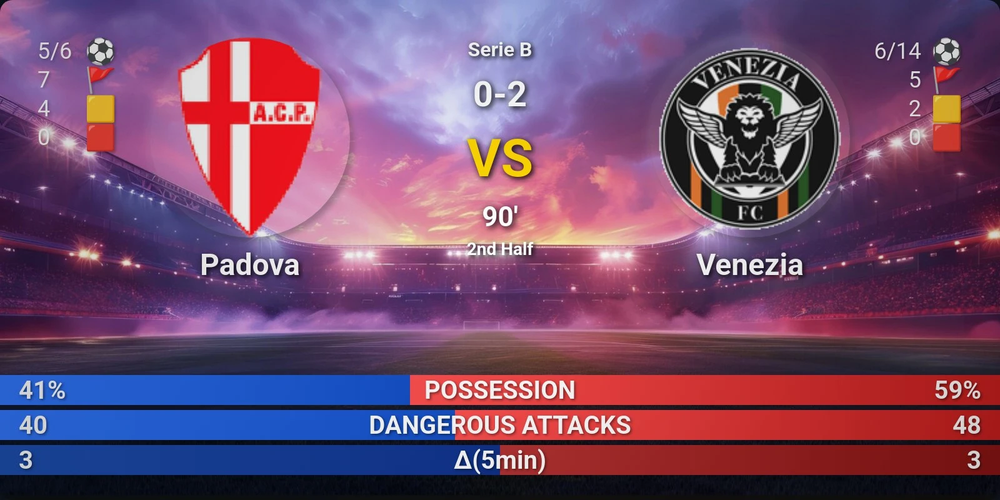
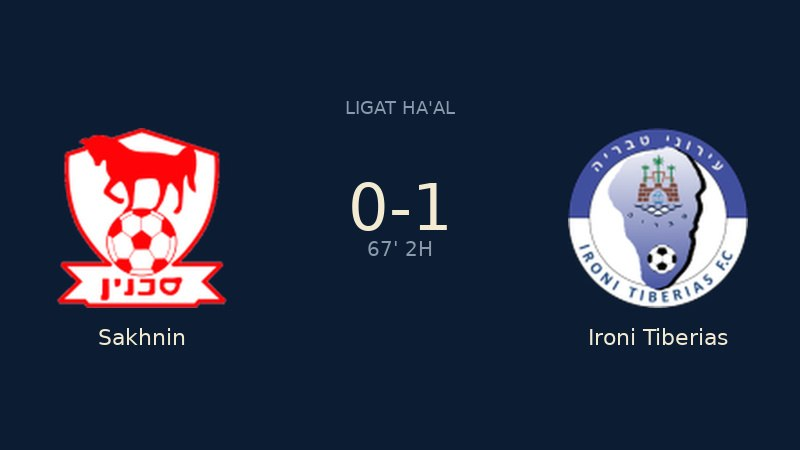

Telegram VS banner: old × new
Old had energy and numbers but read like a betting ad (stock stadium, yellow VS, two fixed colours). New is clean and on-brand but is just two crests and a score floating in navy. The hybrid keeps the new card's calm base and brings back the old card's numbers, with the fired strategy as the loudest thing on it.

Old. Keep: side stats by each crest, full-width split bars. Drop: stock stadium, yellow VS, fixed blue/red.

New. Keep: navy base, cream score, 16:9 so Telegram doesn't crop, crests as the hero. Fix: half the card is empty and it says nothing about why it fired.
Hybrid · 800 × 450, actual size
KALCHAS
LIGAT HA'AL
0-1
67′ · 2nd half
Δ5′ 7.0 Sakhnin
Sakhnin
Ironi Tiberias
58%POSSESSION42%
52DANGEROUS ATTACKS31
6DA · LAST 5′1
Same card in a Telegram bubble (340px phone width)
Sakhnin vs Ironi Tiberias · 67′
Ligat Ha'al
Δ5′ (5-minute pressure): 7.0 / 12.0 for
Sakhnin
21:50
What's in it
- Base from new: same navy, cream score, 16:9 at 800×450. The leading side's score digit is brighter, the dash is quiet.
- Atmosphere without stock art: each crest gets a soft glow in its own team colour, plus a faint halfway line and centre circle. Pillow can draw all of it, and there's no licensed image to carry around.
- Side stats from old: shots on target / total shots, corners, yellows, reds beside each crest. Zeros are dimmed so the eye skips them.
- Fired chip: a teal pill under the clock says which strategy fired, the value, and for which side. That's the one thing you see in the notification thumbnail before you open it.
- Bars from old, in team colours: possession and dangerous attacks stay muted. The fired strategy's own window (last 5′ for Δ5′, last 10′ for Δ10′) is the bright bottom row.
- Crests shrink from 180 to 140 to make room. In Pillow they'd keep their PNG transparency over the glow instead of being matted onto flat navy.
- Fallbacks: no stats means no bars, and the top block re-centres, which is basically today's card plus the glow and chip. If both teams' colours are close (red v red), the away side switches to cream.
- Font: production renders in DejaVu Sans. Bundling one TTF (Sora, as used here) into the bot image would make the numbers look like the site.